3D Modeling
Tutorial Work
I've been 3D modeling (specifically using Blender) probably as long as I've been programming. In most of my years of learning Blender, I've been mostly using tutorials. The image below is of a warehouse scene that I made from a tutorial.
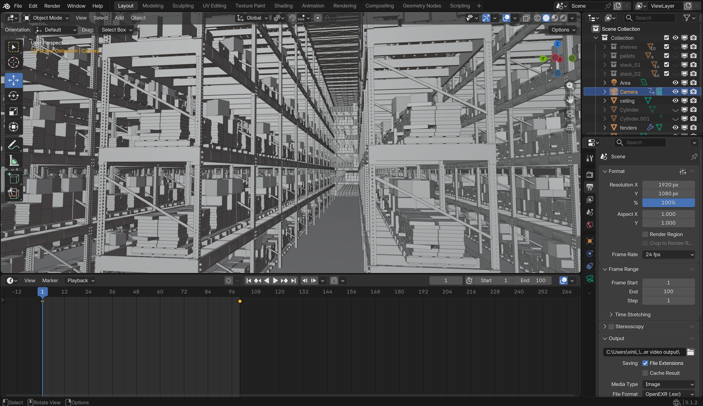
And this black hole.
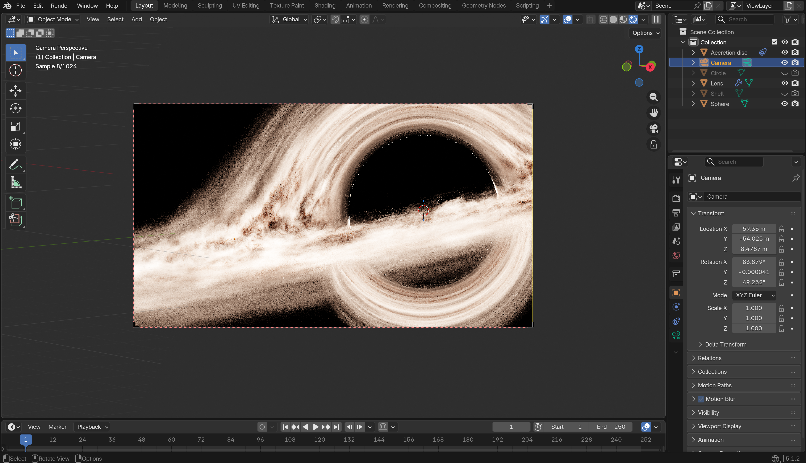
And this model of Earth.
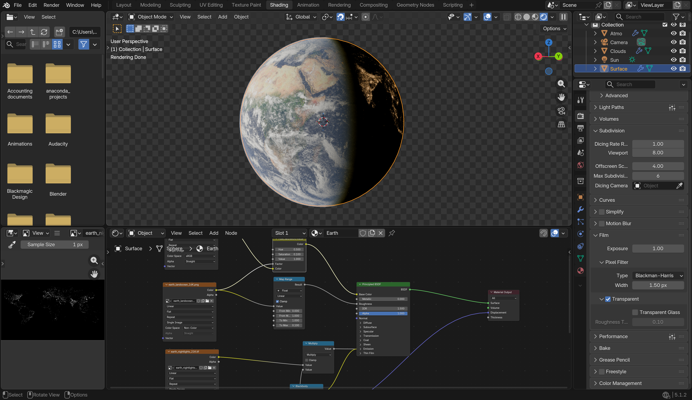
Personal Work
This is the topology of the Heckler and Koch model that I made in middle school.
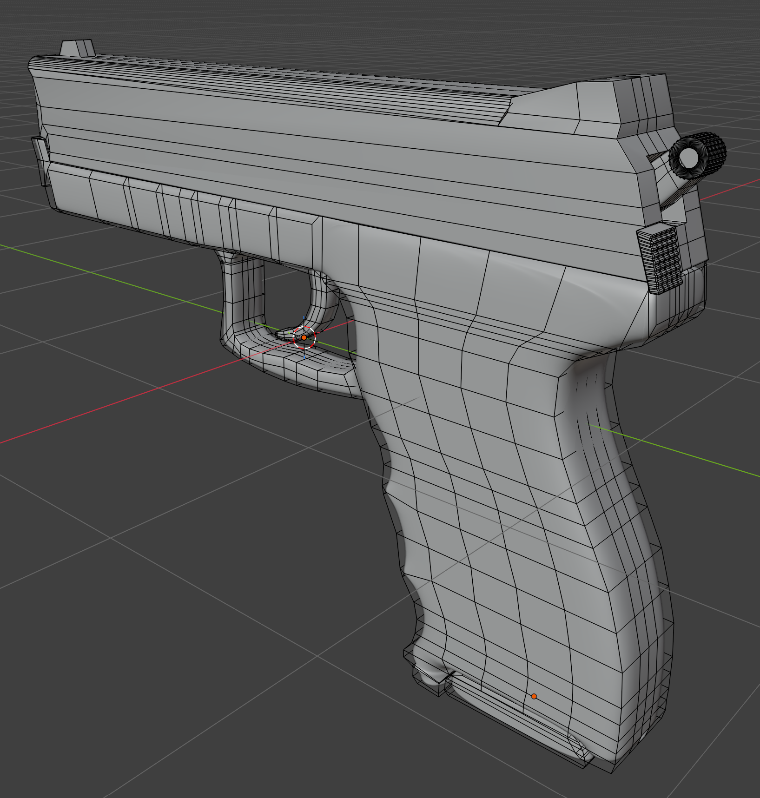
And this is the Lovecraftian horror beyond human comprehension (every new Blender user makes one of them).

Here are images of independent work that I did during my free time in classes.
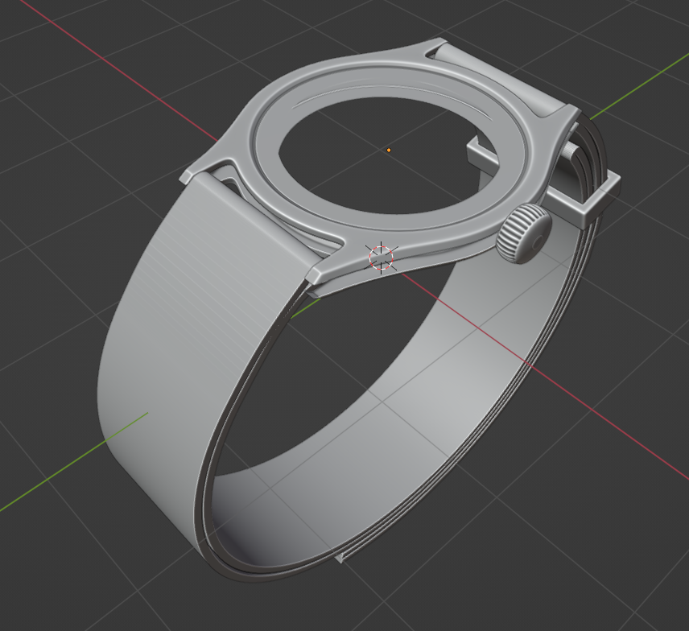
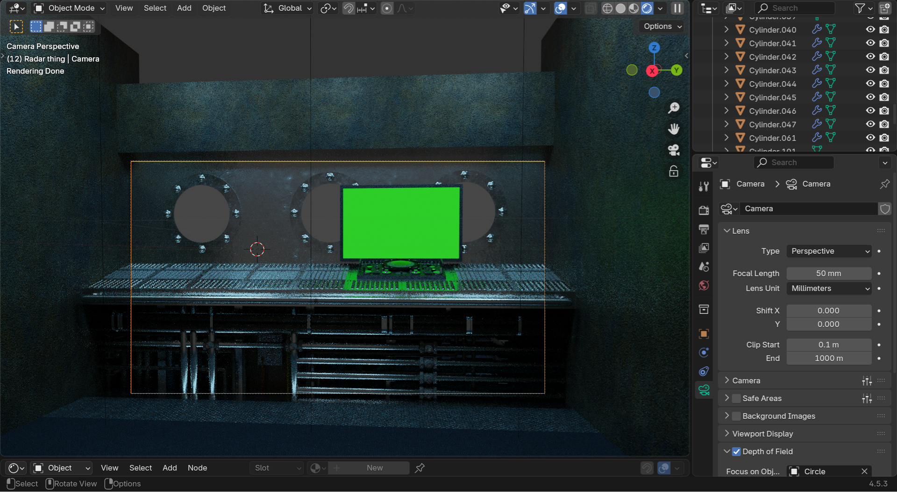
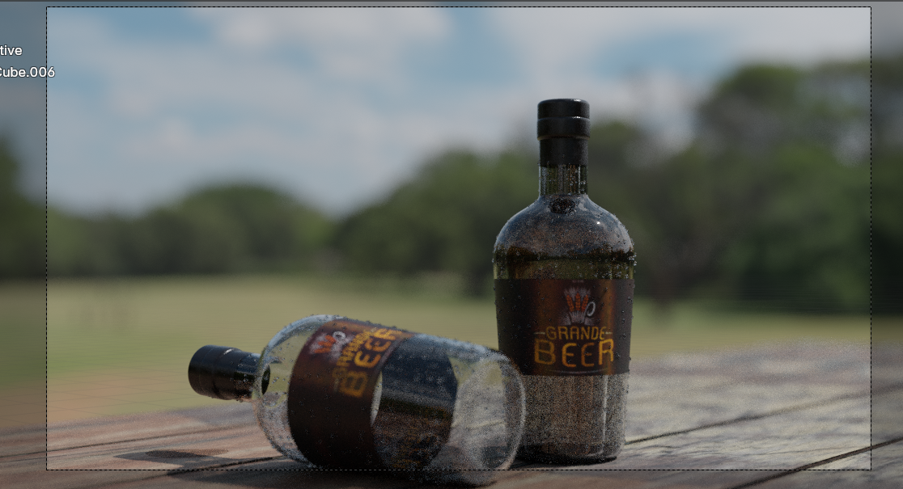
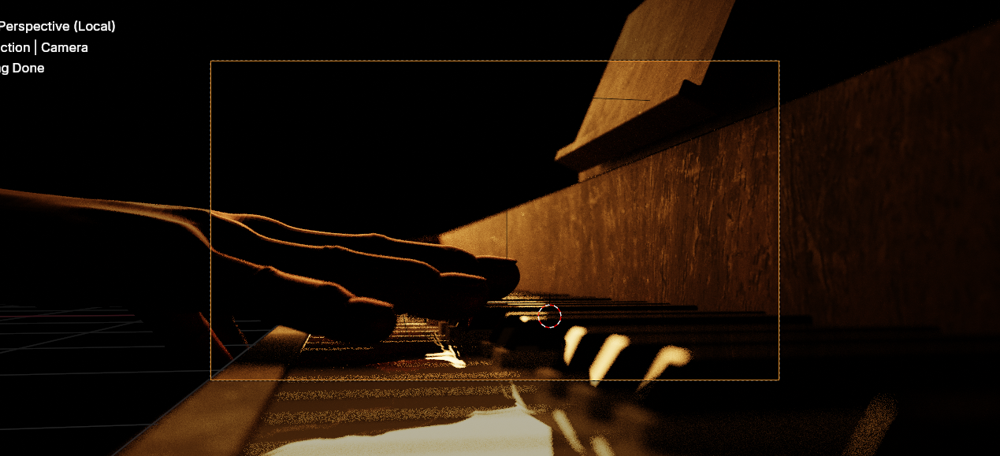
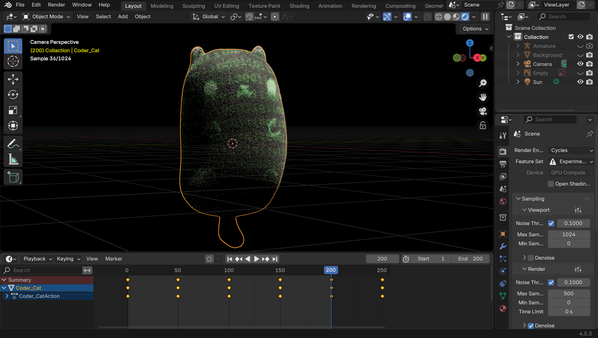
The submarine one was for a Robotics impact presentation, but the entire script had to be discarded last minute (including my work). The cat one is a model of "Coder Cat" a recurring stuffed animal that is pretty much to mascot of the programming subteam on my Robotics team.
Books
Recently, I've been trying to learn more of the fundamentals of Blender and 3D art, which seem to be lacking in many Blender tutorials.
So far, the only good books for Blender that I've found are listed below:
- The Pushing Points Topology Workbook: Volume 01
- The Pushing Points Topology Workbook: Volume 02
- Digital Modeling
- Squeaky Clean Topology in Blender
- Chris Brejon's CG Cinematography
- Illuminated Pixels: The Why, What, and How of Digital Lighting
- Sculpting the Blender Way by Xury Greer
The only one that I've finished so far is the first one, so I can only vouch for that book's quality, but the other ones seem good too on first glance.
Sadly, many Blender books are formatted as "step by step" projects, which by personal experience are not very effective (one of the things that I look out for in a book is the number of exercises). I've also been trying to find more software agonistic books, which seem to be better quality (note that at least the first, second, and fifth books in the list are software agonistic).
By learning in this way, I hope to learn better practices and more more cool stuff in the future!
Below are pictures of some exercises from the first book. The letters and numbers exercise took me over a month, but it was worth it!
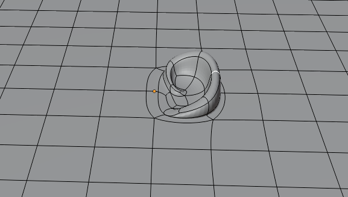
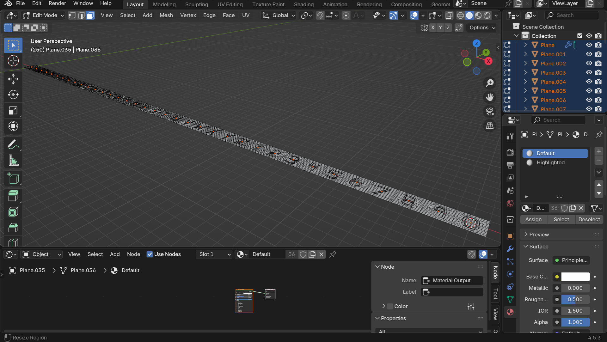